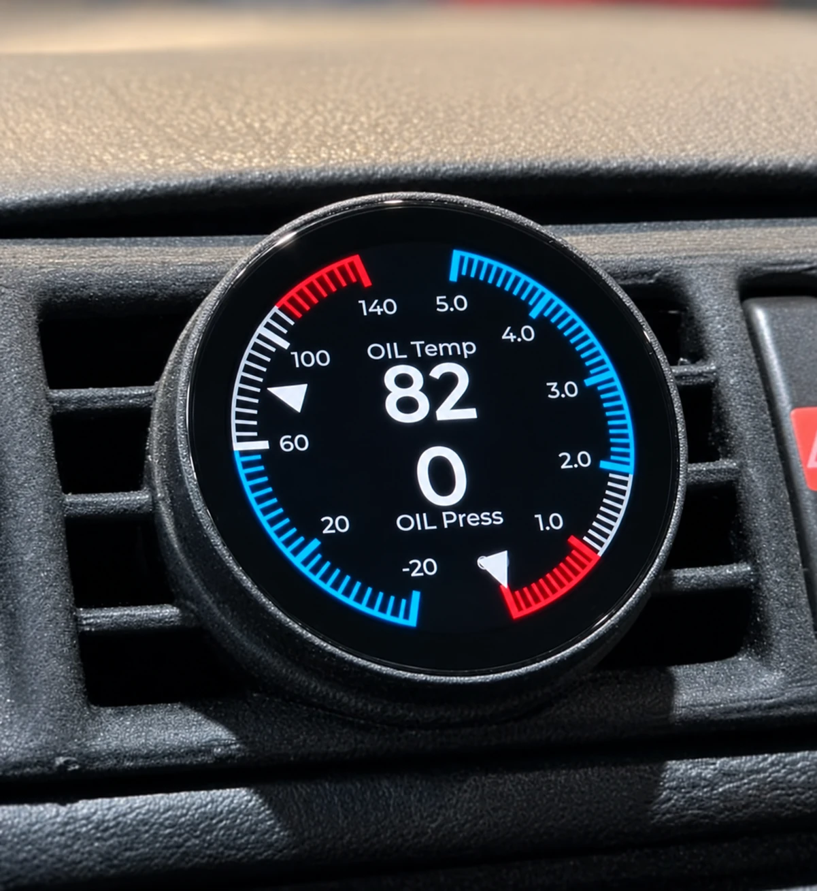

CanDisp 52
Downloads
Manual, firmware and ready-to-use CAN profiles for CanDisp 52.

Operating manual
The manual covers wiring, initial setup, configuration, firmware updates, and safe use of CanDisp.
Firmware
Latest firmware for the CanDisp TFT1.85TP. Update the firmware through the device's web interface.
Download firmware 3.2.13 (.bin) View changelog
Use only firmware that matches your device's hardware revision.
CAN profiles for engine control units
These ready-to-use JSON settings files contain up to 60 configured CAN signals, including identifiers, bit positions, data types and scaling, as well as display settings, screen layouts and the regular CanDisp special screens. Load the matching file using the settings import in the CanDisp Wi-Fi interface.
| ECU | CAN bit rate | CAN ID type | ECU configuration | JSON download |
|---|---|---|---|---|
| MaxxECU Setup guide | 500 kbit/s | 11-bit | Default CAN Output V1.3, ID offset 0 | Download JSON |
| ECUMaster EMU Black V2 | 1 Mbit/s | 11-bit | Standard EMU CAN Stream, base ID 0x600 | Download JSON |
| Haltech Elite / Nexus | 1 Mbit/s | 11-bit | ECU Broadcast Protocol V2 | Download JSON |
| rusEFI | 500 kbit/s | 11-bit | Native Verbose CAN Broadcast, base ID 0x200 | Download JSON |
CAN settings
The CAN bit rate is not imported from the JSON file. Set it separately in CanDisp. The table lists the intended bit rates for these profiles. Some ECUs allow other bit rates; adjust CanDisp to match.
Engine control unit
Enable the matching CAN output protocol in your ECU. The bit rate, CAN identifiers and protocol version must match the selected profile.
Compatibility
The profiles are based on the manufacturers' published CAN protocols. Signal mappings and scaling have been checked; practical testing with every listed ECU has not yet been completed.
These profiles process regularly broadcast CAN messages. The separate Saab Trionic 7 connection actively requests additional diagnostic readings over KWP.